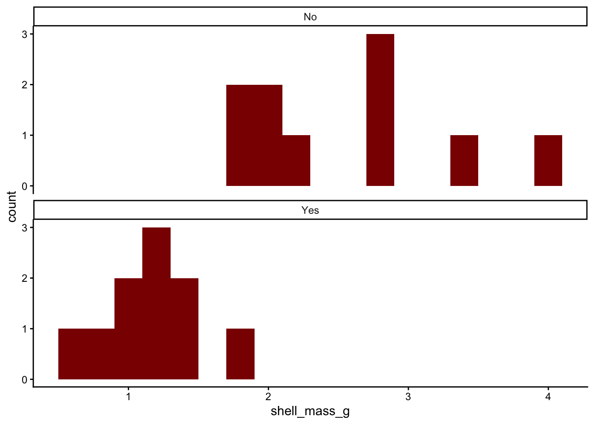
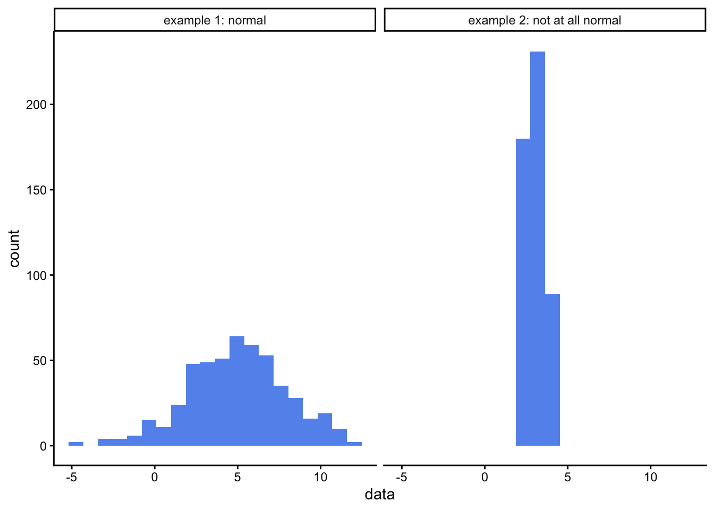
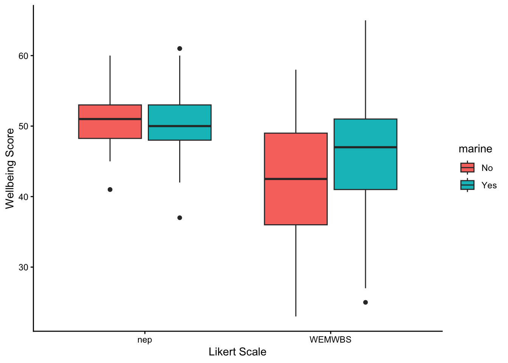

flowchart TD
A{Difference or Trend \nQuestion?} --> B[Trend]
B --> B2{Are you testing for \ndegree of association\nor are you trying \nto make predictions?}
B2 --> B33[Association:\n\nTest for\n correlation coefficient\nPearson or \n Spearman's Rank]
B2 --> B44[Predictions:\n\nSimple linear regression]
A --> C[Difference]
C --> C22{Do you have replicates?}
C22 --> C22Y[Yes]
C22 --> C22N[No]
C22N --> C23{Do you have count data?}
C23 --> C23Y[Yes]
C23 --> C23N[N0]
C23Y --> C24(Chi square test:\nGoodness of fit\nor\nTest of independence)
C23N --> C25[These data cannot be analysed]
C22Y --> D{How many factors?}
D --> F[Two or more]
F --> F2{Independent\nsamples?}
F2 --> F2Y[Yes]
F2 --> F2N[No]
F2Y --> F22Y(n-way ANOVA)
F2N --> F22N(n-way\nrepeated measures\nANOVA)
D --> E[One]
E --> G{How many levels?}
G --> H[Two]
G --> I[More than two]
I --> J{Independent\n samples?}
J --> K[No]
J --> L[Yes]
K --> S(Repeated measures one-way ANOVA\nor\nFriedman Test)
L --> T(One way ANOVA\nor\nKruskal Wallis one-way test)
H --> M{Independent\n samples?}
M --> N[No]
M --> O[Yes]
N --> P(paired t-test\nor\nSigned rank test)
O --> Q(two sample t-test\nor\nMatt Whitney U test)
4 Tests for difference: one factor, two levels
In this document we consider tests for difference where there are two levels being compared.
4.1 Test finder flow chart
First, use this flowchart to see if a two-sample t-test or its non-parametric counterpart the Mann-Whitney-U test is appropriate for your question, your study design and your data:
If this chart suggests you need something other than the two sample t-test or Mann-Whitney test, you need to go to the descriptions of that test.
4.2 Two sample t-test: the parametric case
In this exercise we find out how to run a two-sample t-test, to determine whether there is evidence to reject the hypothesis that two samples are drawn from the same population.
4.2.1 When to use the two-sample t-test
It can be used when we have two independent samples of numerical (not ordinal) response data, and our question is whether the data provide evidence that the samples are drawn from different populations. Even when this criterion is met and the data are numerical and independent, the normality criterion described below still needs to be met. That apart, two common examples where we have two sets of data but we should not use the two sample t-test are:
If the data in your two samples are not independent because you have measured the same individual replicate before and after some event or treatment, then you should probably be using a paired t-test instead. In this you don’t have two samples, each comprising a separate and independent set of replicates. Instead, you have multiple pairs of values, one pair per replicate. The replicates are still assumed to be independent of each other
If your response data are the answers to a Likert scale such as might be used in a survey then they are ordinal in nature and not numerical, and you should probably be using the non-parametric equivalent of the two sample t-test, which is variously known as the Wilcoxon Rank Sum test or as the Mann Whitney U test, or its paired sample version, if appropriate.
It can be used when the data set is small. But not so small that there are no replicates. You do need replicates.
It can still be used when the data set is large.
It assumes that the data are drawn from a normally distributed population. There are various ways to test if this is plausibly the case, and you should try at least one of them, but with small samples, just where the t-test is most useful, it can be difficult to tell. In the end we can also appeal to reason: is there good reason to suppose that the data would or would not be normally distributed?
When comparing the means of two samples, both samples should in principle have the same variance, which is a measure of the spread of the data, so in principle you need to check that this is at least approximately the case, or have reason to suppose that it should be. However, in an actual t-test done using R, the Welch variant of the t-test is carried out by default. This works even when the variances of the two sets are different, so in practice it is possible to ignore this equal variance requirement.
We only use it when we are comparing two samples, one for each of the two levels of a single factor. When we have samples for more than two levels and we use the t-test to look for a difference between any two of them, it becomes increasingly likely, the more pairs of samples we compare, that we will decide that we have found a difference because we got a p-value that was less than some pre-determined threshold (which could be anything, but is most often chosen to be 0.05) even if in reality there is none. This is the problem of high false positive rates arising from multiple pairwise testing and is where ANOVA comes in. t-tests are only used to detect evidence for a difference between two groups, not more. ANOVAs (or their non-parametric equivalent) are used when we are looking for differences between more than two groups.
4.2.2 Motivation and example
In our example we will consider the impact of pesticide use on the masses of shells of garden snails (Cornu aspersum), as measured in gardens around a city, ten from randomly selected gardens that have used a range of pesticides for at least two years and ten that are from randomly selected gardens that have not ever used pesticides. We leave aside here the issue of how those gardens were identified and how randomisation was ensured.
4.2.3 Questions and hypotheses
Our question is:
Is there evidence for a difference between snail shell masses in the gardens where pesticides were used compared to those where they were not used?
From which a suitable null hypothesis is:
There is no difference between shell masses in the gardens, whether or not pesticides were used.
and a suitable alternate, two-sided hypothesis is:
There is a difference between shell masses.
4.2.4 The data
Suppose we had our data arranged in a spreadsheet in three columns, one giving the garden ID, G1 to G20, one telling us whether pesticides were used in the garden, yes or no, and one telling us the masses in grams of the snail shells from each garden. Afficioados of R will see that this is ‘tidy’ data. Each variable (ID, pesticide use, shell mass) occurs in only one column, rather than being spread across several. It turns out that this way of storing your data makes it much easier to analyse.
# there should be a 'garden_snails.csv' file in your data folder
filepath<-here("data","garden_snails.csv")
snails<-read_csv(filepath)
# if not, you should be able to get it from Mike's github repo
# file_url <- "https://raw.githubusercontent.com/mbh038/r-workshop/refs/heads/gh-pages/data/garden_snails.csv"
# snails<-read_csv(file_url)
head(snails,20)# A tibble: 20 × 3
garden.ID pesticide shell_mass_g
<chr> <chr> <dbl>
1 S1 Yes 1.37
2 S2 Yes 1.15
3 S3 Yes 0.73
4 S4 Yes 0.65
5 S5 Yes 1.03
6 S6 Yes 1.8
7 S7 Yes 1.21
8 S8 Yes 1.41
9 S9 Yes 1.27
10 S10 Yes 1.08
11 S11 No 2
12 S12 No 3.99
13 S13 No 1.99
14 S14 No 1.75
15 S15 No 2.81
16 S16 No 2.15
17 S17 No 1.87
18 S18 No 3.46
19 S19 No 2.8
20 S20 No 2.89- Is this a tidy data set?
- Is the data in the
pesticidecolumn categorical? - If so, how many levels does it have and what are they?
4.3 The Process
4.3.1 Step One: Summarise the data
With numerical data spread across more than one level of a categorical variable, we often want summary information such as mean values and standard errors of the mean for each level.
Here we will calculate the number of replicates, the mean and the standard error of the mean for both levels of pesticide ie Yes and No:
snail.summary<- snails |>
group_by(pesticide) |>
summarise(n = n(),
mean.mass = mean(shell_mass_g),
se.mass = sd(shell_mass_g)/sqrt(n()))
snail.summary# A tibble: 2 × 4
pesticide n mean.mass se.mass
<chr> <int> <dbl> <dbl>
1 No 10 2.57 0.236
2 Yes 10 1.17 0.105From these data, does it look as though there is evidence for a difference between shell masses in the two types of garden? Clearly, the snails in the ten gardens that did not use pesticide had a higher mean shell mass than the ten from gardens that did use pesticide. But is this a fluke? How precisely do we think these sample means reflect the truth about the impact of the use of pesticides? That is what the standard error column tells us. You can think of the standard error as being an estimate of how far our sample means, drawn from just ten gardens of each type are likely to differ from the true shell masses for all gardens that did use pesticides and all gardens that did not.
Bottom line: the difference between the sample means is about ten times the size of the standard errors of each. It really does look as though snails shells in gardens where pesticides are not used are indeed heavier than in gardens where pesticides are used.
4.3.2 Step Two: Plot the data
Remember, before we do any statistical analysis, it is almost always a good idea to plot the data in some way. We can often get a very good idea as to the answer to our research question just from the plots we do.
In Figure 4.1, we will use ggplot() in R to plot a histogram of ozone levels, one for each side of the city. We will stack the histograms one above the other, all the better to help us spot any differences between east and west.
snails |>
ggplot(aes(x=shell_mass_g)) +
geom_histogram(binwidth=0.2,fill="darkred")+
facet_wrap(~pesticide,ncol=1) +
theme_classic()

Instead of histograms, we could have drawn box plots, as in:
snails |>
ggplot(aes(x=pesticide,y=shell_mass_g))+
geom_boxplot()+
labs(x="Pestice use?",
y="Shell mass (g)") +
theme_classic()
or as a dot plot of the means with standard errors of the mean included as error bars, as in Figure 4.3
# for this chart we will use the summary table that we created above.
snail.summary |>
ggplot(aes(x=pesticide,y=mean.mass))+
geom_point(size=3) +
geom_errorbar(aes(ymin=mean.mass-se.mass,ymax=mean.mass+se.mass),width=0.1)+
ylim(0,4) + # try leaving this line out. What happens? Which is better?
labs(x="Pesticide use?",
y="Shell mass (g)") +
theme_classic()
Do the data look as though they are inconsistent with the null hypothesis ?
In addition, do the data look as though each group is drawn from a normally distributed population? One of the types of graphs gives you no indication of that while the other two do. Which is the odd one out? Even when looking at the other two figures, when there are so few data it’s kind of hard to tell, no?
Let’s now do some stats.
4.3.3 Step Three: Check the validity of the data - are the data normally distributed?
We can go about establishing this in three ways: using an analytical test of normality, using a graphical method and by thinking about what kind of data we have. Let’s consider these in turn.
4.3.3.1 Normality test - analytical method
There are several analytical tests one can run on a set of data to determine if it is plausible that it has been drawn from a normally distributed population. One is the Shapiro-Wilk test.
For more information on the Shapiro-Wilk test in R, type ?shapiro.test into the console window. For kicks, try it out on the examples that appear in the help window (which is the bottom right pane, Help tab). One example is testing a sample of data that explicitly is drawn from a normal distribution, the other tests a sample of data that definitely is not. What p-value do you get in each case? How closely do the histograms of each sample resemble a normal distribution?
#first we create a data frame containing the two example data sets
example1<-rnorm(500, mean = 5, sd = 3) # first example from the help pane
example2<-runif(500, min = 2, max = 4) # second example from the help pane
df<-tibble(data=c(example1,example2), distribution=c(rep("example 1: normal",500),rep("example 2: not at all normal",500)))
# then we plot a histogram of each data set
ggplot(df,aes(x=data)) +
geom_histogram(bins=20,fill="cornflowerblue") +
facet_wrap(~distribution) +
theme_classic()
# and finally we run a Shapiro-Wilk normality test on each data set
shapiro.test(example1) # 100 samples drawn from a normally distributed population
Shapiro-Wilk normality test
data: example1
W = 0.9978, p-value = 0.7649shapiro.test(example2) # 100 samples drawn from a uniformly (ie NOT normally) distributed population
Shapiro-Wilk normality test
data: example2
W = 0.95077, p-value = 7.502e-12For the examples above, we see that Shapiro-Wilk test gave a high p-value for the data that we knew were drawn from a normal distribution, and a very low p-value for the data that we knew were not.
The Shapiro-Wilk test tests your data against the null hypothesis that it is drawn from a normally distributed population. It gives a p-value which, as always, is the probably of you having data as far from normality, or further, as yours are if the null hypothesis were true. If the p-value is less than 0.05 then we reject the null hypothesis and cannot suppose our data is drawn froma normally distributed population. In that case we would have to ditch the t-test for a difference, and choose another difference test in its place that could cope with data that was not normally distributed. For a two-sample t-test such as we are hoping to use here, the so-called non-parametric alternative that we could use instead is the Wilcoxon Rank Sum test, often called the Mann-Whitney U test.
Why don’t we do that in the first place, I hear you ask? Why bother with this finicky t-test that requires that we go through the faff of testing the data for normality before we can use it? The answer is that it is more powerful than other, so-called non-parametric tests that can cope with non-normal data. It is more likely than they are to spot a difference if there really is a difference. So if we can use it, that is what we would rather do.
So, onwards, let’s do the Shapiro-Wilk test on our data
We want to test each garden group for normality, so we group the data by location as before and and then summarise, this time asking for the p-value returned by the Shapiro-Wilk test of normality.
snails |>
group_by(pesticide) |>
summarise('Shapiro-Wilk p-value'=shapiro.test(shell_mass_g)$p.value)# A tibble: 2 × 2
pesticide `Shapiro-Wilk p-value`
<chr> <dbl>
1 No 0.223
2 Yes 0.854For both groups the p-value is more than 0.05, so at the 5% significance level we cannot reject the null hypothesis that the data are normally distributed, so we can go on and use the t-test. Yay!
4.3.3.2 Graphical methods - the quantile-quantile or QQ plot.
Confession: I don’t normally bother with numerical tests for normality such as Shapiro-Wilk. I usually use a graphical method instead.
We have already seen two ways of plotting the data that might help suggest whether it is plausible that the data are drawn from normally distributed populations. Histograms and box plots both indicate how data is distributed, and for normally distributed data both would be symmetrical. Well, they would be, more or less, if the data set was large enough but for small data sets it can be quite hard to tell from either type of plot whether the data are drawn from a normally distributed population.
A better type of plot for making this judgement call is the quantile-quantile or ‘qq’ plot which basically compares the distribution of your data to that of a normal distribution. If your data are approximately normally distributed then a qq plot will give a straight(-ish) line. Even with small data sets, this is usually easy to spot.
snails |>
ggplot(aes(sample=shell_mass_g)) +
stat_qq(colour="blue") +
stat_qq_line() +
facet_wrap(~pesticide) +
theme_classic()
Nothing outrageously non-linear there, so that also suggests we can safely use the t-test.
For an overview of how normally distributed and non-normally distributed data looks when plotted in histograms, box plots and quantile-quantile plots, see this review
4.3.3.3 The ‘thinking about the data’ normality test
As you might have guessed, this isn’t a test as such, but a suggestion that you think about what kind of data you have: is it likely to be normally distributed within its subgroups or not? If the data are numerical values of some physical quantity that is the result of many independent processes, and if the data are not bounded on either side (say by 0 and 100 as for exam scores) then it is quite likely that that they are. If they are count data, or ordinal data, then it is quite likely that they are not.
This way of thinking may be all you can do when data sets are very small and any of the more robust tests for normality presented here leave you not much the wiser.
4.3.4 Do the actual two-sample t-test
So, it looks as though it is plausible that the data are drawn from normal distributions. That means we can go on to use a parametric test such as a two sample t-test and have confidence in its output.
If we were doing this in R we could use the t.test() function for this (other functions are available!). This needs to be given a formula and a data set as arguments. Look up t.test() in R’s help documentation, and see if you can get the t-test to tell you whether there is a significant difference between ozone levels in the east and in the west of the city.
t.test(shell_mass_g~pesticide,data=snails)
Welch Two Sample t-test
data: shell_mass_g by pesticide
t = 5.4172, df = 12.442, p-value = 0.0001372
alternative hypothesis: true difference in means between group No and group Yes is not equal to 0
95 percent confidence interval:
0.8397234 1.9622766
sample estimates:
mean in group No mean in group Yes
2.571 1.170 4.3.5 Interpret the output of the t-test.
Study the output of the t-test. Here are some questions to ask yourself.
- What kind of test was carried out?
- A Welch two sample t-test
- What data was used for the test?
- The snail shell mass in g (the output variable) and pesticide use (the explanatory variable)
- What is the test statistic of the data?
- This is t = 5.4172.
- How many degrees of freedom were there? This number is the number of independent pices of information that were used to calculate the final result. It is usually one, two, or three or so less than the number of data points. Don’t overthink it at this stage, especially not the fact that here it is not an integer.
- df = 12.442
- What is the p-value?
- p = 0.0001372. You would most likely report this as p < 0.001
- What does the p value mean?
- It is the likelihood of seeing a difference between sample means as large or larger than the one we found if in fact pesticides made no difference to snail shell mass.
- What is the confidence interval for the difference between shell masses in gardens that use pesticides and in gardens that do not? Does it encompass zero? Remember that the confidence interval gives the range of values within which the true difference between mean shell masses might reasonably lie, given the data. If that range includes zero then the test is telling is that zero is a plausible value for the difference, and hence that we cannot reject the null hypothesis.
- The 95% confidence interval has lower bound 0.8397 and upper bound 1.962.
- Is there sufficient evidence to reject the null hypothesis?
- Yes. We see this in two ways. First the p value is much less than 0.05 and second, the 95% confidence interval does not encompass zero. In a way, the confidence interval is giving us more information than the p-value, since not only can we deduce whether there is evidence for a significant difference, we can also see how big that difference is and how precisely we know it.
- What does the word ‘Welch’ tell you - Google it or look it up in the help for
t.test().- It tells us that a variant of the t-test is being used in which it does not matter if the two. samples have difference variances (spreads).
4.4 Other examples where a two sample t-test might be used.
Remember that t-tests in general are used when you have independent samples with multiple replicates drawn from populations corresponding to two levels of some factor (eg north coast, south coast; this beach, that beach; polluted place, clean place etc) and you have measured something numerical, like a length or a mass, temperature or concentration. You still have to do the tests for normality described above, but these are the basic criteria.
4.4.1 Can you think of examples of where you might use a two-sample t-test?
Here are a few suggestions:
Is there a difference between the flight initiation distance of redstarts when confronted by dogs compared to when they are confronted by drones?
Is the nitrate concentration of water in a river below a beaver dam different from the nitrate content above that dam?
Can you think of another example?
4.5 What if I can’t use a two sample t-test?
Assuming you have two independent samples, this might be because one or both sets failed the normality criterion, or your data are ordinal. In that case the likely alternative is the non-parametric equivalent of the t-test, variously known as the Wilcoxon Rank Sum test or the Mann Whitney U test.
If your data are in fact sets of paired values, for example because you measured some attribute of the same individuals before and after some treatment, or at two points in time, then you need to use the paired t-test.
If you only have one sample of replicates and want to compare its mean value to a threshold, then you use a one sample t-test. You might do this, for example, if you had collected sediment samples from an estuary, measured the concentration in those samples of some pollutant such as pathogens from sewage, or phosphates from farm runoff, and then wanted to see if the water was compliant with water quality thresholds as dictated by, say, the Water Framework Directive.
4.6 The non-parametric case
A common scenario is that we have two sets of measurements, and we want to see if there is evidence that they are drawn from different populations. For some data types we can use a t-test to do this, but for others we cannot.
A t-test requires in particular that the two sets of data are normally distributed around their respective means. With ordinal data this makes no sense. The mean is undefined as a concept for such data.
To see this , reflect that for a collection \(X\) of numerical data, say, 5, 3, 3, 4, and 5 we would calculate the mean as:
\[ \bar{X} = \frac{5+3+3+4+5}{5} = \frac{20}{5}=4 \]
But trying doing the same to five responses of a Likert scale survey. Say the responses you had to five Likert items (individual questions) were “strongly disagree”, “strongly agree”, “mildly disagree”, “strongly disagree” and “don’t care either way”. If you tried to calculate a ‘mean’ response you would be attempting to add up all these responses and to divide the ‘sum’ by five, like this:
\[\text{mean response}=\frac{\text{stongly disagree}+\text{strongly agree}+\text{mildly disagree}+\text{stongly disagree}+\text{don't care either way}}{5} = ? \] This sum makes no sense, I hope you will agree. It makes no sense, not because we are using words to describe our responses, but because, as these are ordinal data, we do not know the size of the gaps between the different points on the scale. Is the difference in agreement between the lowest two, “strongly disagree” and “midly disagree” the same as the gap between the highest two, “mildly agree” and “strongly agree”? We don’t know, mainly because ‘agreement’ is not something that can be measured easily using something like a weighing machine. And if we don’t know, then we shouldn’t really be adding these responses up or dividing them by anything.
Nevertheless, ordinal data are very common, since they are typically what is generated by survey data, where for example repondents may answer a series of questions (‘items’), each with typically five possible responses, but maybe more or fewer, these responses being ordinal in the sense that there is a definite order to them. They might encompass responses like those above, say, or something similar like “very unhappy” to “very happy”. They are also common in clinical and veterinary practice where ordinal pain scores are widely used - patients being asked (if they are human) or assessed as to their level of pain on a scale of 1-10, for example. Note that even if the pain value is recorded as a number it is actually a label, that could just as well have been recorded as one of a series of letters, A, B, C etc or emojis, or any symbol you like. You can’t take the average of a set of faces!
Thus, formally, we need another kind of test for a difference. Broadly, we need to use some form of non-parametric test where we do not assume that the data has any form of distribution, and where, often, we do not use the actual values of the measurements in our dataset but instead use only their ranks. The smallest value would be given rank 1, the next rank 2 and so on.
There are many non-parametric tests out there. Here we will look at only one - the Wilcoxon Rank Sum Test, often referred to as a Mann-Whitney U test for a difference. We can use this for the scenario we have painted above, where we have two sets of data and we wish to know if these provide evidence that the populations from which the samples have been drawn are in fact different.
4.6.1 Example
This example uses actual data gathered by a student at Newquay University Centre.
The student wished to assess peoples’ sense of wellbeing using two different sets of questions designed to assess this. The scales chosen were the Warwick–Edinburgh Mental Well-being Scale (WEMWBS) and the New Ecological Paradigm (NEP) Scale. The student wished in particular to determine whether this sense of well-being was affected by whether a person often and actively frequented the coast and made it and the sea a substantive part of their life in one way or another. ie to find out whether there was evidence to support the notion that it could be good for your mental wellbeing to be by the sea and to make it part of your life.
Each scale used consists of 15 questions or ‘Likert items’, each of which is answered on a 5 point ordinal scale, where a score of 1 indicates lowest wellbeing and a score of 5 indicates highest wellbeing. Thus each respondent could score anything from 15 to 75.
The student got responses from 374 people, 86 of whom were not “marine” users, while the other 288 say that they were marine users. The total scores from each respondent were recorded for each type of survey and stored in the file wellness.csv which you should find on the module Moodle site / Teams page. Please put this file in the data folder of your R project.
4.6.2 Script
Code chunks for a script to carry out the analysis of this data are provided below. To use them you should create a new Quarto document using File/New File/Quarto document, from which you delete all the exemplar material below the yaml section at the top. The first few chunks of this script carry out the same old-same old that we see in script after script: load packages, load data, summarise data , plot data. Copy and paste any chunks you want to use into your own script then adapt them as necessary.
You can run your script by running each chunk in sequence, which you do by clicking the green arrow in the top-right corner of each chunk.
Try also to ‘Render’ the script by clicking on the Render button at the top of the script pane.
4.6.2.1 Load packages
library(tidyverse)
library(here)4.6.2.2 Load data
Our data set is in a .csv file which we have placed in the data folder within our project folder.
Note that this data set has been stored in ‘tidy’ form: each variable appears in only column, and each observation appears in only one row.
filepath<-here("data","wellness.csv")
wellness<-read_csv(filepath)
glimpse(wellness)Rows: 748
Columns: 4
$ id <dbl> 1, 2, 3, 4, 5, 6, 7, 8, 9, 10, 11, 12, 13, 14, 15, 16, 17,…
$ scale <chr> "WEMWBS", "WEMWBS", "WEMWBS", "WEMWBS", "WEMWBS", "WEMWBS"…
$ marine <chr> "Yes", "No", "No", "No", "Yes", "Yes", "Yes", "No", "Yes",…
$ total_score <dbl> 48, 51, 37, 39, 38, 40, 54, 39, 54, 39, 51, 50, 49, 51, 54…4.6.2.3 Summarise the data
We’ll calculate the median score (50th percentile) and the 25th and 75th percentile scores. For ordinal data, these summary statistics are well defined, whereas means and standard deviations are not.
wellness |>
group_by(scale,marine) |>
summarise(median.score=median(total_score),iqr_25=quantile(total_score,0.25),iqr_75=quantile(total_score,0.75))# A tibble: 4 × 5
# Groups: scale [2]
scale marine median.score iqr_25 iqr_75
<chr> <chr> <dbl> <dbl> <dbl>
1 WEMWBS No 42.5 36 49
2 WEMWBS Yes 47 41 51
3 nep No 51 48.2 53
4 nep Yes 50 48 534.6.2.4 Plot the data
Box plots are particularly suitable for ordinal data since they show the 25th and 75th percentiles of the data (the bottom and top of the box) plus the 50th percentile aka the median, which is the thick line across each box. All of these percentiles are well defined quantities for ordinal data.
wellness |>
ggplot(aes(x = scale,y = total_score,fill = marine)) +
geom_boxplot() +
labs(x = "Likert Scale",
y = "Wellbeing Score") +
theme_classic()
Looking at the plot, what do you think each scale suggests about whether proximity to the sea makes a difference to wellbeing?
4.6.2.5 Wilcoxon-Mann-Whitney U test
First let’s pull out the scores as measured by the WEMWBS scale and do a test for a difference between the scores of marine users and those of non-marine users. We can use the filter() function to do this.
WEMWBS<-wellness |> filter(scale=="WEMWBS") # save the WEMWBS data into a data frame called WEMWBS
glimpse(WEMWBS)Rows: 374
Columns: 4
$ id <dbl> 1, 2, 3, 4, 5, 6, 7, 8, 9, 10, 11, 12, 13, 14, 15, 16, 17,…
$ scale <chr> "WEMWBS", "WEMWBS", "WEMWBS", "WEMWBS", "WEMWBS", "WEMWBS"…
$ marine <chr> "Yes", "No", "No", "No", "Yes", "Yes", "Yes", "No", "Yes",…
$ total_score <dbl> 48, 51, 37, 39, 38, 40, 54, 39, 54, 39, 51, 50, 49, 51, 54…Now let’s do the actual Wilcoxon-Mann-Whitney U test:
wilcox.test(total_score~marine,data=WEMWBS)
Wilcoxon rank sum test with continuity correction
data: total_score by marine
W = 9077.5, p-value = 0.0001687
alternative hypothesis: true location shift is not equal to 0The null hypothesis of this test is that there is no evidence that the data are drawn from different populations. In this case, the p-value is very small, so we can confidently reject that null hypothesis and assert that there is evidence, according to the WEMWBS scale that marine use makes a difference to peoples’ sense of wellbeing.
Does it make it worse or better? - we can see from the summary table and from the box plot that higher scores are associated with those people who were exposed to a marine environment.
We might report this results as follows, first using a plain English statement of the main finding, and then reporting the type of test use, the value of the test statistic that it calculated and the p value. In this case, because the p value is so small, we would not report its exact value, but simply give an indication of how small it is:
We find evidence, according to the WEMWBS scale, that the wellbeing score is 4.5 or about 10% higher for people exposed to a marine environment (Mann-Whitney U, W = 9077.5, p < 0.001).
4.6.3 Exercise
Adapt the code of the last chunk so that you can do the same test but for data as recorded by the nep scale
4.6.4 When should I use this Wilcoxon-Mann-Whitney U test?
The test we have used here is an example of a non-parametric test. This means that it does not assume that the data follow a known mathematical distribution and, further, that it can be used with ordinal data.
We used the Mann-Whitney U test in particular because we were testing for a difference, and because the factor of interest - marine exposure - had just two levels - Yes or No. This test is only suitable when there are just two levels, so you can think of it as as a non-parametric alternative to a t-test.
In another setting where we still had just one factor (eg zone of a rocky shore) but there were more than two levels (eg low, mid and high zones of the shore) and we decided that we wanted to do a non-parametric test for a difference, then we would probably use the Kruskal-Wallis test, which you can think of as the non-parametric alternative to a one-way ANOVA.
In this example we used the Mann-Whitney U test because the data were ordinal and thus not suitable to use with a parametric test (but see below!). Where we can, we usually try to use a parametric test as they are more powerful than their non-parametric equivalents, meaning, if there is a trend or a difference in the data, they are better able to detect it. However those parametric tests (t-test, ANOVA, pearson correlation, PCA, GLM to name but a few) typically require not only that the data are numerical but also a host of other things, including that they follow a particular distribution, usually (but not always) the normal distribution, and this is often not the case with real biological data. Often, especially with count data, there are lots of zeros, or the data distribution is heavily skewed, usually to the right. In these cases, providing the data are independent of each other, we can usually still use a non-parametric test such as we have here. it might not be the most powerful test we can use (GLMs are typically way better if you can use them), but it will work.
4.6.5 Hang on!
The eagle eyed among you may have spotted a massive flaw in the line of argument presented above. We said that ordinal data can’t be added up, can’t be used to calculate averages and so on. Thus we can’t run parametric tests on them and have to look for alternatives, namely, non-parametric tests.
And yet, these non-parametric tests are usually run on the output of Likert scales such as we have considered here, where for each person we have a number of Likert Items (ie individual questions) that together constitute the scale, that each generate a score 1-5, then we add up the scores to get a total score. But that means we are adding up ordinal data!!!
It turns out that you actually get much the same results with Likert scale data if you analyse them using supposedly inappropriate parametric tests such as a 2-sample t-test as you do if you use a non-parametric test such as the one we considered here, the Mann-Whitney test.
A study by De Winter and Dodou (2010) shows this convincingly.
de Winter, J. F. C., & Dodou, D. (2010). Five-Point Likert Items: t test versus Mann-Whitney-Wilcoxon (Addendum added October 2012). Practical Assessment, Research, and Evaluation,15, 1–16. https://doi.org/10.7275/bj1p-ts64
For an enlightening discussion of this paper, see this blog by Jim Frost
4.7 Paired data
Often one has a sample of replicated data where each element has a counterpart in another matched sample - paired data. A common scenario for this is when there are data for the same individual at two different points in time, for example before and after some event such as the application of a treatment.
In order to determine whether there is a difference between the two sets, one should take the paired aspect into account and not simply match the whole before-set against the whole after-set without doing this. That would be to throw away the information whereby there is likely to be a greater degree of correlation between the responses of an individual before and after the event than there is between any randomly chosen pairs of individuals before and after the event.
4.7.1 Which test: paired t-test or Wilcoxon signed rank test?
There is a choice between at least two tests: the parametric paired t-test and the non-parametric Wilcoxon signed rank test. Ideally one would use the t-test since it is more powerful than the Wilcoxon test. This means several things, but in particular it means that, all else being equal, it can detect a small difference with higher probability than the Wilcoxon test can.
4.7.2 The paired t-test
Where the data are numerical (ie not ordinal) and where the before and after data are both normally distributed around their respective mean values one would use the paired t-test in this scenario. One can test for normality using either a test such as the Shapiro-Wilk test, or graphically using either a histogram, a box plot, or (best), a quantile-quantile plot.
4.7.3 The Wilcoxon Signed Rank test
The t-test, an example of a so-called parametric test, is actually pretty robust against departures from normality, but where one doubts its validity due to extreme non-normality or for other reasons such as the ordinal nature of the data, the Wilcoxon signed rank test is a useful non-parametric alternative. It is called non-parametric because it does not make any assumption about the distribution of the data values. It only uses their ranks, where the smallest value gets rank 1, the next smallest gets rank 2, and so on.
So, you typically use this test when you would like to use the paired t-test, but you cannot because one or both of the data sets is way off being normally distributed or is ordinal.
4.7.3.1 Null Hypotheses
In both the t-test and the Wilcoxon signed rank tests, the null hypothesis is the usual ‘nothing going on’, ‘there is no difference’ scenario, but there is a subtle difference between them that reflects the different information that they use. In the Wilcoxon signed rank test the null is that the difference between the medians of pairs of observations is zero. This is different from the null hypothesis of the paired t–test, which is that the difference between the means of pairs is zero.
4.7.3.2 Test output
Both tests will give a p value. This is the probability that the mean (t-test) or median (Wilcoxon signed rank) paired differences between the corresponding before and after sample elements would be equal to or greater than it actually is for the data if the null hypothesis were true. If the p value is less than some pre-decided ‘significance level’, usually taken to be 0.05, then we reject the null hypothesis. If it is not, then we fail to reject the null hypothesis.
4.7.4 Example
We will use as an example a data set from Laureysens et al. (2004) that has measurements of metal content in the wood of 13 poplar clones growing in a polluted area, once from each clone in August and once again from each of them in November. The idea was to investigate the extent to which poplars could absorb metals from the soil and thus be useful in cleaning that up. Under a null hypothesis, there would be no change in the metal concentrations in the plant tissue of each clone between August and November. Under an alternate hypothesis, there would be.
Laureysens, I. et al. (2004) ‘Clonal variation in heavy metal accumulation and biomass production in a poplar coppice culture: I. Seasonal variation in leaf, wood and bark concentrations’, Environmental Pollution, 131(3), pp. 485–494. Available at: https://doi.org/10.1016/j.envpol.2004.02.009.
Concentrations of aluminum (in micrograms of Al per gram of wood) are shown below.
Load packages
library (tidyverse)
library(here)
library(cowplot) # to make the plots look niceLoad data
filepath <- here("data","poplars-paired_np.csv")
poplars <- read_csv(filepath,show_col_types = FALSE)
head(poplars,20)# A tibble: 13 × 4
ID Clone August November
<dbl> <chr> <dbl> <dbl>
1 1 Balsam_Spire 8.1 11.2
2 2 Beaupre 10 16.3
3 3 Hazendans 16.5 15.3
4 4 Hoogvorst 13.6 15.6
5 5 Raspalje 9.5 10.5
6 6 Unal 8.3 15.5
7 7 Columbia_River 18.3 12.7
8 8 Fritzi_Pauley 13.3 11.1
9 9 Trichobel 7.9 19.9
10 10 Gaver 8.1 20.4
11 11 Gibecq 8.9 14.2
12 12 Primo 12.6 12.7
13 13 Wolterson 13.4 36.8Plot the data
Before we do any test on some data to find evidence for a difference or a trend, it is a good idea to plot the data. This will reveal whatever patterns there are in the data and how likely they are to reveal a truth about the population from which they have been drawn.
Tidy the data
In this case there is work to do before we can plot the data. The problem is that the data is ‘untidy’. The two levels of the factor month are spread across two columns, August and November. For plotting purposes it will be useful to ‘tidy’ the data so that there is only one column containing both levels of month and another containing the aluminium concentrations. The function pivot_longer() can do this for us:
poplars_tidy <- poplars |>
pivot_longer (August:November,names_to="month",values_to="Al_conc")
head(poplars_tidy,8)# A tibble: 8 × 4
ID Clone month Al_conc
<dbl> <chr> <chr> <dbl>
1 1 Balsam_Spire August 8.1
2 1 Balsam_Spire November 11.2
3 2 Beaupre August 10
4 2 Beaupre November 16.3
5 3 Hazendans August 16.5
6 3 Hazendans November 15.3
7 4 Hoogvorst August 13.6
8 4 Hoogvorst November 15.6Now we can plot the data as a box plot, with one box for August and one for November ie one for each level of the factor month. Had we not first tidied the data, we could not have done this.
poplars_tidy |>
ggplot(aes(x = month, y = Al_conc, fill = month, colour = month)) +
# alpa (= opacity) < 1 in case any points are on top of each other
geom_boxplot(outlier.size=0,alpha=0.5) +
geom_point(alpha = 0.5) +
# group = ID makes the lines join elements of each pair
geom_line(aes(group=ID),colour = "grey60") +
labs(x = "Month",
y = "Al conc.(mu g Al / g wood)") +
theme_cowplot() +
theme(legend.position = "none")
Does it look as though the difference between the medians could plausibly be zero for the population from which these samples were drawn? Or, put another way, if it was zero, how big a fluke would this sample be? That is what the p value actually tells us.
4.7.5 Two sample paired t-test
Check for normality of differences
Before we use the t-test, we need to check that it is OK to do so. This means checking whether the paired differences are plausibly drawn from a normal distribution centred on zero.
The null hypothesis of the Shapiro-Wilk test is that the data set given to it is plausibly drawn from a normally distributed population. So let us give our sample of paired differences:
shapiro.test(poplars$August-poplars$November)
Shapiro-Wilk normality test
data: poplars$August - poplars$November
W = 0.92667, p-value = 0.3081The p value is very high. Thus we do not reject the null hypothesis and we can reasonably assume that the differences between the August and November aluminium concentrations in the sample could plausibly have been drawn from a normally distributed population, despite the outlier value in the November sample. Thus we can reasonably test for difference using a paired t-test.
The actual t-test
We can do this in R using the function t.test(), where we give to the function both the August and the November data, knowing that each August value has a counterpart November value, and we set the argument paired to TRUE.
t.test(poplars$August, poplars$November, paired = TRUE)
Paired t-test
data: poplars$August and poplars$November
t = -2.3089, df = 12, p-value = 0.03956
alternative hypothesis: true mean difference is not equal to 0
95 percent confidence interval:
-9.5239348 -0.2760652
sample estimates:
mean difference
-4.9 All parts of the output have meaning and are useful, but here we will focus on just two:
- the p value is equal to 0.040. Hence, if we have chosen the usual significance value of 0.05, we can take this to mean that there is evidence of a significant difference between the August and November values.
- the lower and upper bounds of the 95% confidence interval are (-9.52, -0.28). YOu can think of this interval as the range of values within which the difference can plausibly lie, at the 95% confidence level. The key thing is that this range does not encompass zero. This means that we can be confident at the 95% level that there is a non-zero change on going from August to November, and, in particular, that the August value is lower than the November value.
4.7.6 The non-parametric alternative: The Wilcoxon signed rank test
To be safe, because of that outlier, let us test for difference using the Wilcoxon signed rank test. In R this is done using the function wilcox.test(), with the argument paired set to TRUE.
wilcox.test(poplars$August, poplars$November, paired = TRUE)
Wilcoxon signed rank exact test
data: poplars$August and poplars$November
V = 16, p-value = 0.03979
alternative hypothesis: true location shift is not equal to 0We see that the conclusion (in this case) is the same.
4.7.7 Relation to one-sample paired test
The two-sample paired tests as we have done above are the same as doing a one-sample test to see if the differences between the August and November paired values is different from zero. This is true whether we do a t-test or a Wilcoxon signed rank test.
In either case, the first argument is the vector of differences, and the second mu is the threshold value against which we want to compare those differences, in this case zero.
t.test(poplars$August - poplars$November, mu = 0, data = poplars)
One Sample t-test
data: poplars$August - poplars$November
t = -2.3089, df = 12, p-value = 0.03956
alternative hypothesis: true mean is not equal to 0
95 percent confidence interval:
-9.5239348 -0.2760652
sample estimates:
mean of x
-4.9 wilcox.test(poplars$August - poplars$November, mu = 0, data = poplars)
Wilcoxon signed rank exact test
data: poplars$August - poplars$November
V = 16, p-value = 0.03979
alternative hypothesis: true location is not equal to 0Note that the output from both these one-sample tests, where the one sample is the vector of differences and the threshold with which it is compared is zero, is exactly the same as the output of the two-sample tests where the two samples were the vectors between which we were interested in detecting a difference, ie the August and November values. This is not surprising since the two cases are just two ways of doing exactly the same thing, which is to ask if there is evidence from the sample for a difference in the population between the August and November concentrations of aluminium.